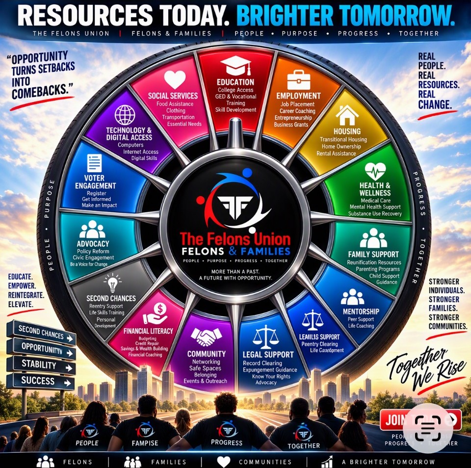

The Felons Union
F.E.L.O.N.S. Union
FELONS & FAMILIES
RESOURCES TODAY. BRIGHTER TOMORROW.
People • Purpose • Progress • Together
More Than A Past. A Future With Opportunity.
79M Felons/Criminals
Every one counts. Every one matters. 79M is our modeled estimate for all people with a felony / criminal record in the U.S. — including people who did time, are on supervision, and people with a record who are living, working, and raising families now. About 19M are felons. This is not an official government count — it is our estimate so no one gets left out.
Contact: contact@thefelonsunion.com | (614) 569-6740 | Columbus, OH | thefelonsunion.com
The Wheel - Tap It
Tap any section on the wheel below and it opens all resources in that category. Housing is on the right side, yellow.

Go To Wheel Page
Start Here - First 72 Hours
1. ID + Phone + Email 2. Housing 3. Benefits (SNAP / Medicaid) 4. Job / CQE 5. Mentor + Community
Resources Wheel - Tap Any Section
Wheel is BIG below. Touch any colored section on the wheel - it will take you there. Try HOUSING on the right side, yellow.
Pinch to zoom on your phone if you need it bigger. Or tap a category button under the wheel.
Or tap a category here:
Ask AI - Type Your Question
Type like you talk. Example: can I vote in Ohio?
Try:
Live Numbers
Felons / Criminals
modeled estimate
Felons
Released
~1,242 / day
About to be released in next 90 days needing resources BEFORE release: ~111,750
Needing resources NOW: ~21.3M (79M x 27%)
Recidivism: ~28% return, 72% stay free. These counters are estimates from BJS 2023 releases/admissions + CSG recidivism. Ohio 33% is 2016 stale data.
Live clock: 11/23/2026, 4:31:32 PM - Columbus, OH
Resources
SNAP / Food: Apply at county JFS. Felony alone does not ban SNAP in Ohio, drug felony has special rules - check JFS.
Medicaid: Felony alone does not bar. Apply in your state, pre-release enrollment 30-90 days is best.
Medicare: Age / disability based, not barred by felony alone.
TANF, SSI/SSDI, Housing Voucher: Apply at county JFS / SSA / housing authority.
Jobs: OhioMeansJobs, CQE, second-chance employers.
All Wheel Categories
Ohio
Columbus-based. Ohio releases ~17,340 / yr. Ohio recidivism 33% (2016, stale - needs update). SNAP ~1,386,865. Medicare ~2,535,073. Medicaid ~3,301,000.
Voting in Ohio: You cannot vote while incarcerated for a felony. Right is restored after release - you must re-register.
CQE: ORC 2953.25 - lifts automatic bar for jobs/licenses. CQH: ORC 2953.26 - for housing.
Collateral Sanctions in Ohio - Punishment After The Sentence
ORC 2953.25: a penalty / disability for employment or licensing that applies by law because of a conviction, even if it was not in your sentence. Not prison, probation, or parole.
1,250 provisions in Ohio law impose collateral consequences. 77% employment-related. 614 licensing, 331 direct employment, 182 business licensing. 47% mandatory / 53% discretionary. 82% indefinite.
Fields hit hardest: Health 315, Public Employment 153, Education 133, Banking 62, Real Estate 55, Adult Care 53, Gaming 50, Construction 49, Fire/EMS 43, Childcare 41.
How to fight back: CQE (jobs), CQH (housing), Record Sealing (most nonviolent after 1-3 years), Pardon. CQE does NOT lift sex offender registry (2950) or driver/CDL suspension.
General information, not legal advice. Check your conviction, county, and current law or talk to legal aid.